Magnetometers of Alaska
Jonah Barkley-Griggs
2026 GEOS F102
What is a Substorm?
What is a Substorm?
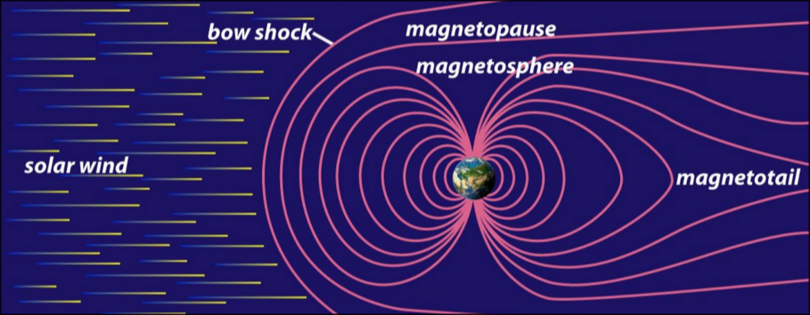
[1]What is a Substorm?
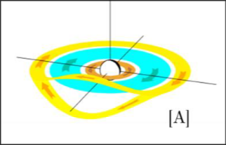
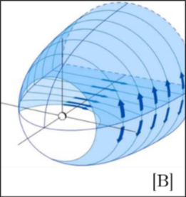
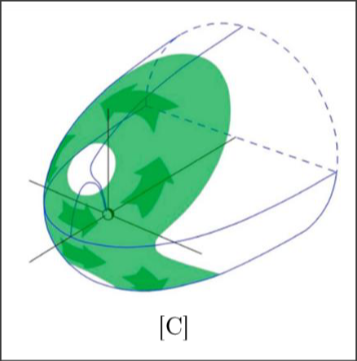
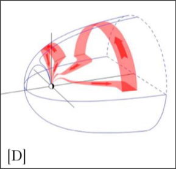
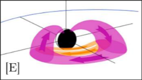
[2:A] ring current system. [2:B] tail current system. [2:C] Chapman-Ferraro current system. [2:D] Region 1 current system. [2:E] Region 2 current systemWhy Does it Matter?
Why Does it Matter?
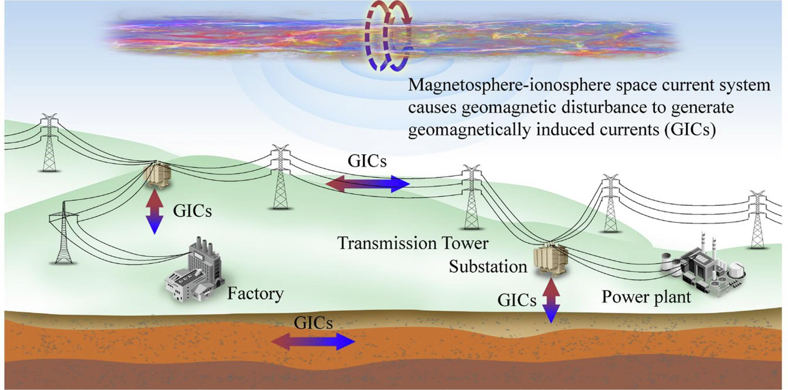
[5]- GIC's are responsible for damage to infrastructure
Why Does it Matter?
[5]
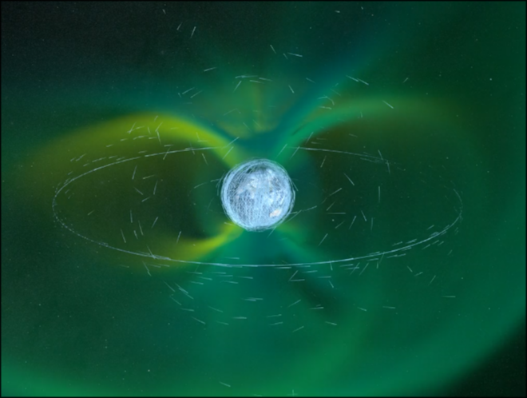
[6]- GIC's are responsible for damage to infrastructure
- Magnetic storms are responsible for satellite losses
- These are both preventable with good forecasting
What does a substorm look like?
USGS CMO[3]
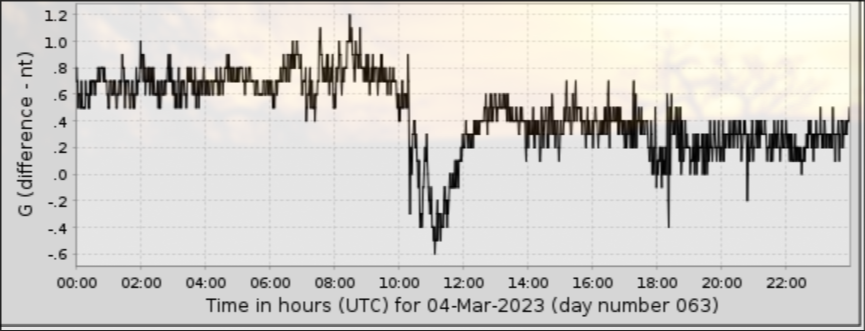
- Macro-Scale \(\frac{d^2 b}{dt^2} \) homogeneity
- Macro-Scale \(\frac{db}{d t} \) heterogeneity

Readings shown as ΔnT, vertical component represented by color.
magnetometer coverage
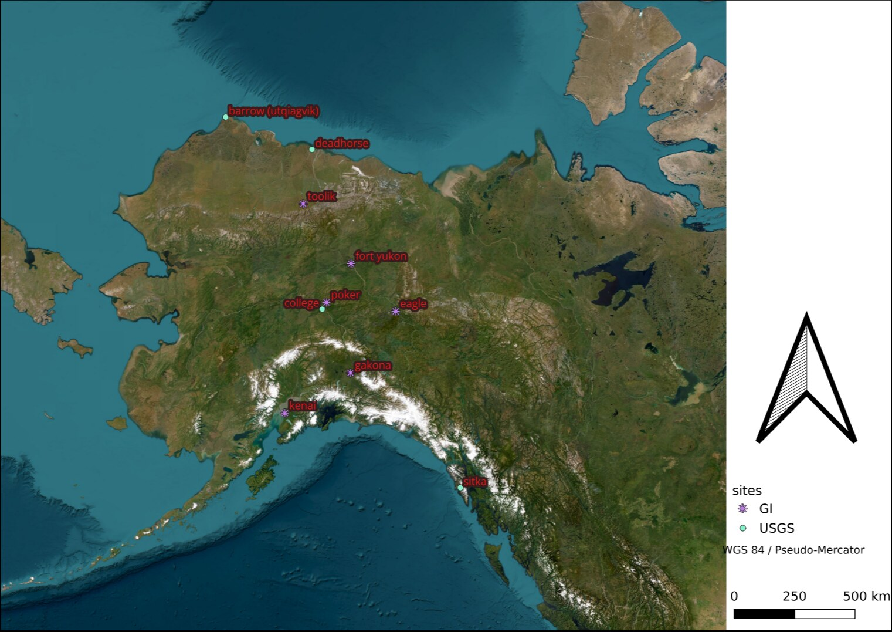
magnetometer coverage
sparse coverage
- Two primary open-data Magnetometer Networks in AK
- Comprising only ten sites
sparse coverage
= low resolution
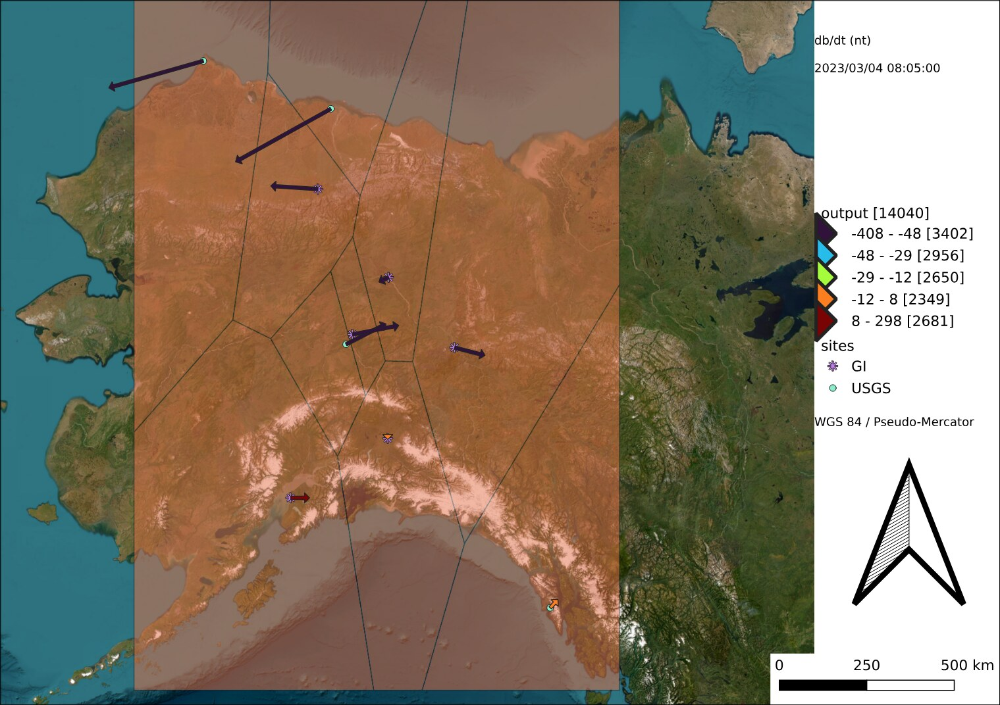
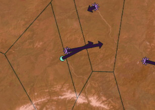
= High uncertainty
sparse coverage
= low resolution
- Ideal placement: every 100m [4]
- lowest local homogeneity corresponds to greatest \(\frac{db}{d t} \)
= High uncertainty
What does it mean?
What does it mean?
- Large scale magnetic storms are detectable
- Fine-scale variability dominates representational uncertainty
- Network density is the binding constraint on substorm models
bibliography
[1] study.com
[2] doi:10.1002/2017RG000590
[3] https://imag-data.bgs.ac.uk
[4] doi:10.1007/s11214-008-9337-0
[5] doi:10.1016/j.ijepes.2023.109657
[6] https://svs.gsfc.nasa.gov/5193/